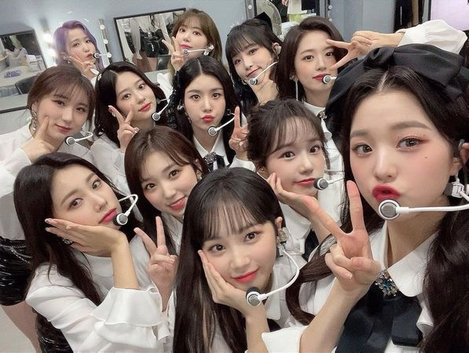
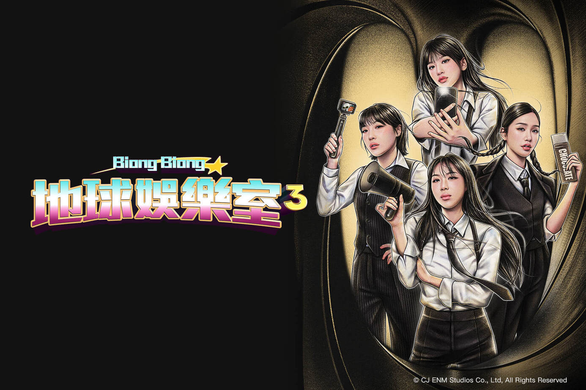

生涯經歷
出道前
2016年11月，安俞真到首都首爾市旅行，搶到Melon音樂頒獎典禮的前排站位門票，並在現場直播時被拍攝入鏡，而當時正宣布防彈少年團獲頒TOP10藝人。站在前排往後望時，看到了為了舞台上藝人歡呼的粉絲們，萌生了想成為歌手的想法。
為了實現成為明星歌手的夢想，她主動上網搜尋「如何成為偶像」，並錄製了一段自己演唱趙容弼《이젠
그랬으면 좋겠네》（希望以後是這樣）的影片，寄送至多家經紀公司。因住在大田廣域市不方便參加現場面試，便以電子郵件形式報名STARSHIP娛樂的試鏡。最終，她成功通過甄試進入STARSHIP娛樂成為練習生。當時經紀人特地從首爾前往大田與她會面，充分展現了公司對她的重視。成為練習生後，她搬到了首爾，正式展開練習生生活。
2017年練習生時期：出演《RAIN》MV、拍攝CF引起討論
- 2月，進入STARSHIP娛樂後一個月，即擔任SISTAR的韶宥與EXO的伯賢合作曲《RAIN》的MV女主角。
- 4月、7月，分別作為抗痘乳霜Clearteen及隱形眼鏡ACUVUE
Vita的廣告出演者出現在大眾的目光。
- 7月、8月，擔任前輩柳昇佑、燦多合作曲《OPPA》的MV女主角，以及鄭世雲前輩《JUST
U》的MV女主角。
2018年 - 2021年：IZ*ONE出道、出演《蒙面歌王》、擔任《人氣歌謠》主持。

- 2018年6月15日，參加韓國Mnet主辦的生存選秀節目《PRODUCE
48》，同年8月31日，最終以票選第5名入選IZ*ONE。因成軍當天離她15滿歲差一天，成為從音樂選秀節目出道年齡第二小的女團成員。
- 2018年10月29日，以限定組合IZ*ONE出道。
- 2018年12月9日，成為第一位參加《蒙面歌王》的IZ*ONE成員，亦成為最年輕女參賽者。
- 2018年12月11日，因為亨敦和大俊回歸，安俞真和BTOB鄭鎰勳成為《Idol
Room》特別MC。
- 2019年3月4日，入讀首爾公演藝術高等學校，也透露與師姐女團fromis
9白知憲為同班同學。
-
2019年10月25日，安俞真與她的父母和經紀公司為安俞真現在的狀況及未來進行長時間的討論，並決定進行自主學習，專注於IZ*ONE活動。
- 2020年9月1日，安俞真通過高中學歷鑑定考，取得高中學歷。
- 2021年3月7日，正式成為《人氣歌謠》主持。
- 2021年4月29日，於限定組合IZ*ONE兩年半的團體活動結束。
2021年：IZ*ONE解散、個人活動時期
- 2021年8月28日，與張員瑛因與確診了COVID-19肺炎的工作人員路線重疊，進行了PCR檢查，結果為陰性。被防疫當局歸類為密切接觸者而自發居家隔離。9月3日出現了發燒及喉嚨痛的症狀後進行了PCR檢測，出現陽性反應，於翌日上午確診。16日被醫生確認痊癒並且不具有傳染性，已被解除隔離並順利出院。痊癒後接受了GLAZE晶狀體手術以改善視力，10月24日才回到《人氣歌謠》主持。
2021年-TBC：IVE出道、出演《Biong Biong地球娛樂室》系列、《犯罪現場歸來》
.jpeg)

-
2021年11月2日，STARSHIP娛樂公佈為旗下新女團IVE的第一名成員擔任隊長。
- 2021年12月1日，作為IVE的成員出道。並於2022年年末組合斬獲MMA、MAMA、金唱片等等大型頒獎典禮的新人賞，並同時獲得年度歌曲大賞。
- 2022年6月24日，出演綜藝《Biong
Biong地球娛樂室》，為成員中忙內。
- 2023年1月10日，《Biong
Biong地球娛樂室》宣布正在準備製作第二季，該節目拍攝完畢後於同年5月12日開播，並且憑藉高人氣獲得韓國蓋洛普6月的節目喜好一位，為首個全女性綜藝達成此成就。
- 2023年7月12日，作為韓亞金融集團代言人至旗下K聯賽球隊《大田韓亞市民足球俱樂部》主場開球，入場人次突破2萬大關，共計20592人，為K-聯賽入場紀錄的平日第二高,及第23賽季單日觀眾人數最多的紀錄[31][32]。
- 2023年7月18日，TVING透漏正在製作《犯罪現場》第四季《犯罪現場歸來》，入選為固定成員，節目於2024年2月9日起播出。
- 在2023年MBC歌謠大祭典上，俞真和好友李泳知一起翻唱了碧昂絲的《End
of Time》與Lady Gaga的《Born This Way》，廣受好評。2023年12月15日，迪士尼100周年紀念動畫《星願》宣布韓文版主題曲《소원을
빌어 》由安俞真演唱[34]，歌曲於2023年12月22日發行。